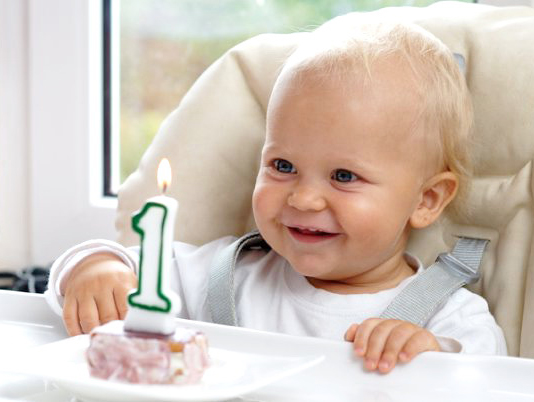

Годовалый малыш понимает и выполняет простые просьбы, подражает действиям детей и взрослых, манипулирует с пирамидкой, кубиками.
Ребенку в возрасте 1 год обычно доступны следующие двигательные навыки:
- подползает под препятствие;
- вползает по наклонной поверхности, сползает;
- залезает, карабкается на диваны, кресла, спускается на пол;
- стоит без опоры;
- приседает, выпрямляется, наклоняется;
- ходит, держась одной рукой;
- поднимается на лесенку детской горки приставным шагом (с помощью взрослого);
- делает самостоятельно несколько шагов без поддержки или самостоятельно проходит три-пять метров;
- подражает знакомым движениям взрослого;
- подражает простым движениям сверстника (хлопает, трясет, стучит).